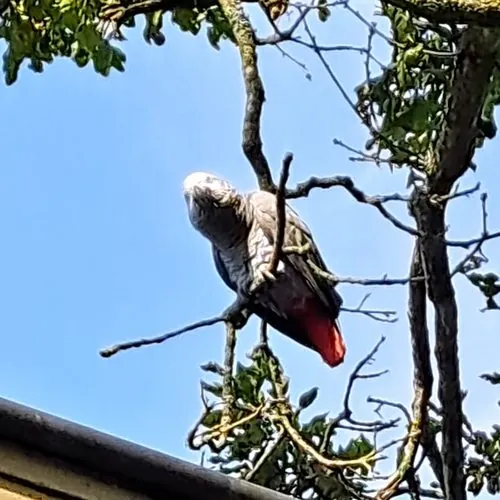

鸟类 · 动物界
非洲灰鹦鹉 Psittacus erithacus

以高智商和模仿人语著称的灰色鹦鹉，尾羽鲜红，被称为“鸟类中的爱因斯坦”，因宠物贸易而被列为濒危。
- 分类
- 门脊索动物门纲鸟纲目鹦形目科鹦鹉科属非洲灰鹦鹉属
- 栖息环境
- 中西非的低地雨林、河岸林和红树林，营巢于高大乔木的树洞
- 地理分布
- 非洲中西部，从几内亚湾沿岸到刚果盆地、乌干达和肯尼亚西部
- 保护级别
- IUCN 濒危（EN）；CITES 附录Ⅰ物种，中国无野生分布
物种志
非洲灰鹦鹉体长约 33 cm，体重 400–500 g，翼展 46–52 cm。全身羽毛以深浅不一的灰色为主，头部和颈部的灰色较浅，翅膀颜色较深，尾羽鲜红，是它身上唯一的亮色；喙黑色而弯曲，眼睛周围有一圈白色裸皮，虹膜淡黄色。雌雄羽色几乎相同。
非洲灰鹦鹉分布于非洲中西部的热带雨林和季雨林，从几内亚湾沿岸到刚果盆地、乌干达和肯尼亚西部，栖息在低地雨林、河岸林和红树林。它们以果实、种子、坚果和嫩叶为食，常成群活动。非洲灰鹦鹉以高智商著称，能理解数字、颜色和形状，还能模仿人类说话，被认为是智力最接近类人猿的鸟类之一。繁殖期在树洞中产卵，每窝 2–4 枚，孵化约 28–30 天。由于宠物贸易的大量捕捉和栖息地丧失，野生种群急剧下降，被列为濒危物种并受到国际贸易公约严格管制。
形态与习性
- 食性果实、种子、坚果和嫩叶
- 体长约 33 cm
- 体重400–500 g
- 翼展46–52 cm
- 繁殖每窝 2–4 枚卵，孵化约 28–30 天
- 寿命圈养可活 50 年以上
- 智力能理解数字、颜色和形状，模仿人语
趣味知识
- 非洲灰鹦鹉能理解数字、颜色和形状，智力在鸟类中名列前茅。
- 它们能模仿人类说话，词汇量可达数百个。
- 因为宠物贸易的大量捕捉，非洲灰鹦鹉已被列为濒危物种。
- 它的尾羽鲜红色，是全身灰色羽毛中唯一的亮色。